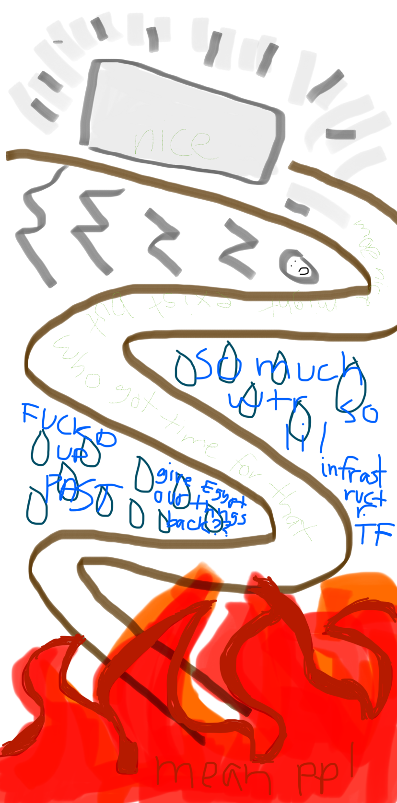

i emailed jean a few days ago and she responded with this drawing to describe her mental state when she was in new york a few weeks ago and didnt reach out because her plan was to feel extremely bad. my plan is to feel extremely good but right now i feel extremely bad, it feels silly

i am overcome with a grief i never thought i would experience again. when i was 21 when i was 22 when i first started living in florida i was overcome with regret and failure and decisions that i thought, at this point, i had moved past. i am inconsolable in a way that feels embarrassing. people dislike how i use the word embarrassing, i mean it in that you didnt move past something. you were unable or unwilling to live your actual life. i mean it in that something happened to you anything at all happened to you. how could you let that happen. my life has been divided into periods of 4 years, half of the time in each of these periods is marked by extreme grief and confusion and shame at the prior decisions ive made, that it took until now for me to learn to realize what i actually want (beauty, clean sheets, a balcony, infinite time (or, atleast, an inability to process the passing of time), north facing windows, to never be touched again, to be touched so much, for shame to wash over me into action) i think because ive never actually seen the stars i dont crave them, i feel so late to every thing as if everyone has already been doing it all since before i started. the other half of the time is spent in... not that. not in grief at the very least, sometimes confusion without the grief, sometimes a deep appreciation, last summer was so lovely when i would sit on the couch and look out the window feeling bad. i felt bad but it wasnt grief. it was maybe a looking forward too far into knowing what i will lose as opposed to what i had lost. there are still so many things to happen. this is when i was so afraid of trees and how they made me feel. when i would see trees moving in the wind they would make my mouth water. i was getting ready to throw up. they were warning me of my incoming dissatisfaction maybe. maybe they were just letting me know they were there. i had some more to say some specific and beautiful things to say, but i talked to three older women in the park while i was typing and now feel better, not good, but better.